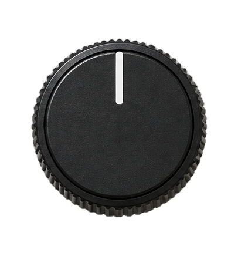
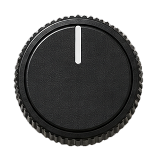

What the compiler sees — 153 key angles · 0 numeric
282 ops · depth 150
Source (untrusted · turn to test)

Circuit

Backend
Detection matrix
Compiler
CH1 Naive
CH2 QCEC
CH3 Fidelity
Naive test catches
TrustPass catches
Lamp: red = attack caught · green = passed
CH1 Naive histogram test
TVD0.003PASS
CH2 Formal equivalence (QCEC)
EQUIVALENTPASS
CH3 Fidelity audit
ESP0.389 vs 0.710FAIL
REJECT
Equivalent, but sabotaged: placed on qubits with 6.0% readout error vs 2.0% device median.
CH3 · Fidelity audit, on a noisy copy of the device
Inspect the circuit
Acquisition ledger
Rating plate
Threat model
The compiler is untrusted. Your machine is trusted. The hardware provider is a different party, and the compiler never sees your results.
Lock
Every single-qubit angle becomes a key symbol held on your machine. Decoy CX pairs give every qubit pair the same CX count at random positions. No name, metadata or global phase leaves.
Verify
Formal equivalence for every input (MQT QCEC) plus an output-map check catches Trojans. Estimated success probability from the device's calibration, against a free honest compile, catches sabotage that stays equivalent.
Cost
Locking adds two-qubit gates after compilation.
Out of scope
An attacker who sees your execution results (Grover's output is its secret). Scheduled compiles containing delays are rejected, not verified. The QAOA graph is hidden statistically, not exactly.
Red-teamed
Two rounds of independent attackers and a final review of the verifier found 15 issues; each was re-verified, then fixed, measured or documented (see the README).
Built on
Qiskit 2.5 · Qiskit Aer · MQT QCEC · IBM fake backends with real calibration data.